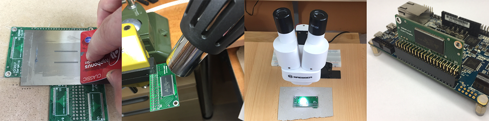

Overview¶

When you’ve gotten your DE10-Nano FPGA board, you will probably want to have the expansions like the SDRAM or IO board.
You don’t need to install all boards
MiSTer starts from entry level as a bare DE10-nano board. With just one additional board (SDRAM), you will be able to use almost all cores.
Available daughter boards¶
-
SDRAM Board: (recommended)
This small board plugs into the GPIO0 connector of the DE10-nano board. Whilst the DE10-nano has fast DDR3 memory, it cannot be used to emulate a retro EDO DRAM due to a high latency and shared usage from the ARM side. This SDR SDRAM on a daughter board is required for most cores to emulate a retro memory module.
-
I/O Board: (optional)
This board plugs into the GPIO1 connector of the DE10-nano board. It provides a legacy VGA output (6 bits per component), analog audio (3.5mm phone jack), digital optical audio, buttons, and LEDs. This board is useful if you prefer VGA over HDMI or you want to put the MiSTer inside a case. This board also helps for core development; HDMI scaler code requires around twice as much time to compile, while compiling for VGA-only will speed up development. This board is not required to run most cores.
-
RTC Board (optional)
This board is plugged into the LTC connector and provides a real-time clock (RTC). You still can have a real-time clock without the board if MiSTer is connected to Internet via Ethernet. Only two cores use this feature, so it is only for enthusiasts.
-
USB Hub Board (optional)
This board adds a 7-port USB hub that sits under the main board.
-
ADC-In (optional)
This is a small add-on board giving ability to use external audio device such as a tape input
Schematics and Gerber files are available to download. Boards are considered DIY (do it yourself). There are no restrictions on how these boards are manufactured and sold, or by whom; any third party is welcome to manufacture and sell them.
There are two ways to do that:
1. Buy¶
Check the sale threads: * Add-On Sale Thread (Atari-Forum) NOTE: If you will find some sellers not mentioned in that thread, please post there the link and ask before purchase. There are some scammers who improperly solder the boards and sell even with higher price than you can get on the forum. * In general, it’s best to prefer buyers that have been around for some time, and have some track record. Many are members of the forums and discord and you can find them easily there. It is also recommended to only buy official versions of the addons first, since MiSTer upgrades are not guaranteed to be compatible with unofficial hardware.
2. Do It Yourself¶
If you are a bit technically gifted or just want to learn how to assemble PCBs by yourself, then head over to the “Assembly (DIY)” guides in the wiki sidebar and make your own boards! You can discuss and share your experiences with us here: * Add-on Soldering Talk Thread (Atari-Forum)